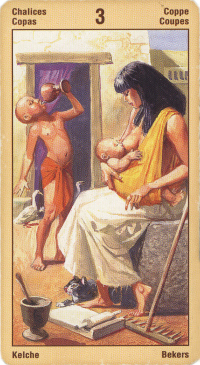

Тройка Кубков
Прямое положение: основательное завершение какого-то дела и веселье; счастливый исход, победа.
Значение: Это – успех задуманного дела, восстановление добрых отношений, наступление благоприятной полосы в жизни, успешное путешествие, словом – удача, хотя, скорее, духовного, чем материального плана.
В отличие от Двойки, Тройка указывает на успех и налаживание отношений многих или хотя бы нескольких людей, составляющих семью, группу, коллектив и т.д.
Наступило время для праздника. Вы можете праздновать какое-то особенное событие, например, свадьбу или рождение ребенка.
Эта карта смягчает не¬благоприятные предсказания карт, с которыми оказывается в соседстве.
В перевернутом положении карта символизирует излишнюю любовь к удовольствиям, похотливость, сладострастие, склонность к преувеличениям, растрату своих жизненных сил на удовольствия, излишества, отсутствие престижа, непонимание ситуации, задержки.
Отрицательное значение: сплетни старых знакомых, невоздержанность в еде и выпивке, похоть, бесталанность.